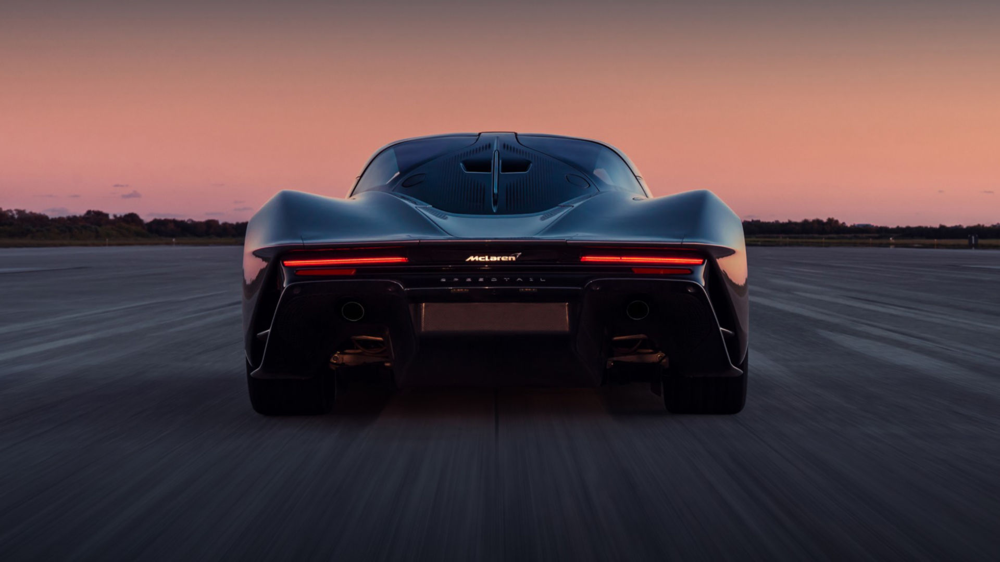
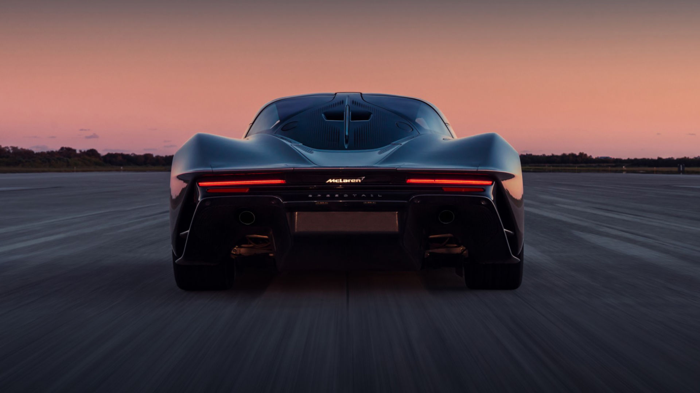

Unlike other McLaren cars, the McLaren Speedtail is one of many cars that are limited in production around the world. This car is also hybrid which means it can run with both gas and electricity. This car was first introduced to the world on October 26, 2018. The McLaren Speedtail was built for the future. The McLaren Speedtail has 1036 hp, and it has enough space to fit two passenger seats, and the doors are just like the ones on the 720s. This car is bulked up with the nicest specifications. The overall performance of the McLaren Speedtail is fantastic. It has a top speed of 240.5 mph, and it can accelerate from 0 - 186 mph in just 12.8 seconds. The McLaren Speedtail has a maximum torque of 848 ft.
The McLaren Speedtail, being electric itself, has a huge hefty battery. In usual electric cars, you will need to go to a charging station and charge the car. With the McLaren Speedtail, the battery automatically charges while driving. It is charged by a wireless charging suspension. On sunny days, driving is a drag with the sun shining at you. Even though there are sunlight shaders, they're not very useful. In the McLaren Speedtail, the glass is made from electrochromic glass. This darkens the glass with just one push of a button, and the driver can drive with ease. Not only that. It also allows for the LED inside the car to illuminate. Another feature is, the McLaren Speedtail does not have side mirrors like many McLarens and other cars. It has two mounted cameras on the sides. Additionally, the front wheels of the car feature Carbon Fibre texture which reduces the amount of drag in a car. This is excellent for its performance.
The McLaren Speedtail features 3 seats like the McLaren F1. The drive is of course in the middle and slightly forward than the other two passenger seats. This is actually a great design, because for one thing, it can fit 1 extra person, and for another, the driver being in the middle has now full vision of both sides. The interior of the McLaren Speedtail includes a smooth leather finish and the carpet portion of the car is also made of this fine leather. The interior also consists of titanium Deposition Carbon Fibre. The interior also offers space for luggage from McLaren Speedtail owners which is another satisfactory purchase and term.

To test this car, it was done in the Kennedy Space Center in Florida. Furthermore, it was used on the tracks and grounds of Germany, Spain, and Italy. In total, the production of the car reached 106 cars all of which were sold for around $3.07 million. What this car lacks is safety. It does not have side airbags and was not up to code in the FMVSS in America.
Video courtesy of McLaren Speedtail.